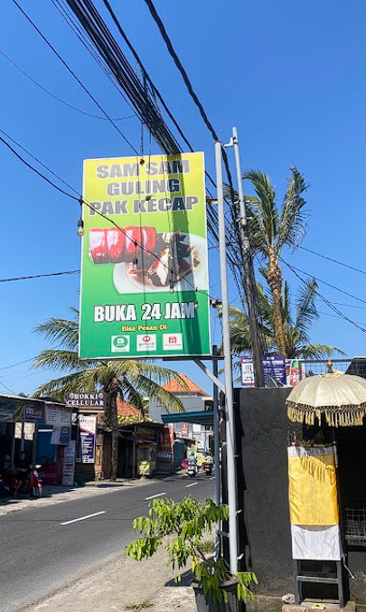

Warung Babi Guling Pak Kecap didirikan oleh Bapak I Ketut Rastawan yang akrab disapa Pak Kecap pada tahun 2003. Masakan babi guling Pak Kecap menggunakan racikan bumbu rempah khas Bali yang autentik membuat masakannya sangat diminati oleh masyarakat di Bali. Babi Guling Pak Kecap berada di Jalan Raya Tanah Asri, Sibang Gede, kami buka setiap hari selama 24 jam untuk menemani makan Anda kapan saja.
